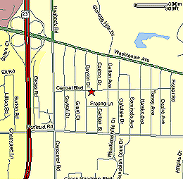

|
Directions to Carpenter! |
|
|  | Carpenter Elementary - 4250 Central
Blvd. Take S. University to Washtenaw. Turn right on Washtenaw. Take Washtenaw for a few miles, past Huron Pkwy and the U.S. 23 junction. Go past Carpenter Road. Turn right on Dayton St. Carpenter is on the left. for more info, contact Sara Greenwood |